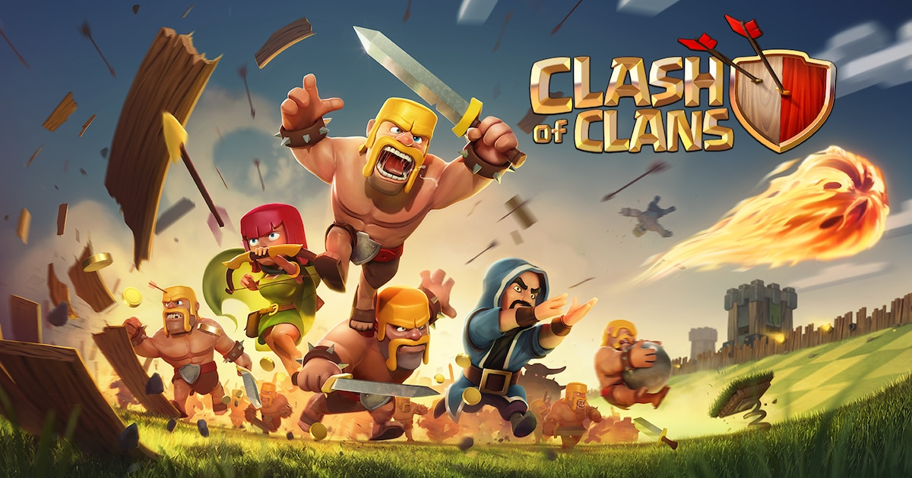

Clash of Clans, también conocido como CoC, es un videojuego de estrategia y de construcción de aldeas en línea,
Se juega generando tropas ,ir atacando distintas aldeas para con seguír recursos y mejorar tus estructúras para terminar mejorando el ayuntamiento (edificio mas inportamte )
Esta aldea es con la que empezamos de un principio es la que mas tiempo nos va a llevar construir ya que hay hasta maximo nivel 15 en todas las estructuras y estas mismas en mejorarse tardan horas, si no dias
Esta aldea se desbloque segun vamos avanzando en la aldea principal y es muy distinta a respecto a ella ya que las estructuras y tropas son distintas esta aldea tiene como nivel maximo el 9 asi que vamos a tardar menos que en la principal
supercell brawl stars galeria royale hay day boom beach clash royale